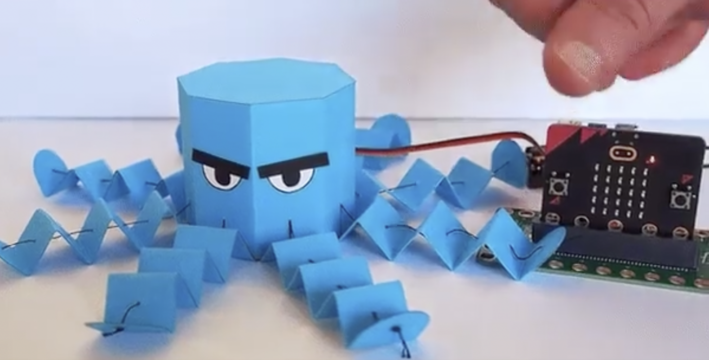
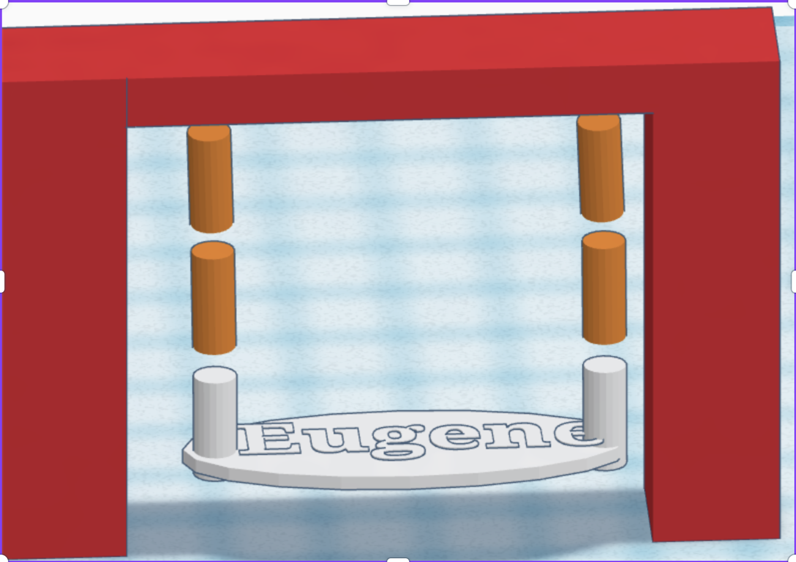
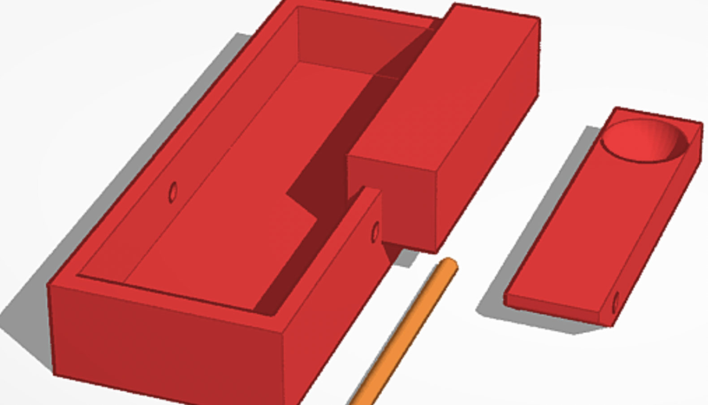

This is my character's gun. I always play this character in Valorant, so I made his gun skin and I am still using it. Also there is photo of my character in about me.
Me and my partner used a micro bit to make an octopus. I had a good time making it. It was a little bit hard when I cut the paper . However, coding for the tentacle was easy.
I use a tinkercad that has gravity so swing can swing. I didn't know that there was a mode like this but it was interesting. It was also fun when I could throw toys to my work. I used the hanging block so it could be and look like a swing and also can move like a swing.
I used tinkercad to make a catapult. It was fun when I finished making it. It was super easy. However, the stick for the base and spoon was so weak and easily broken.